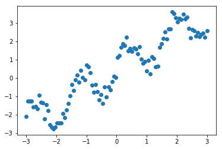
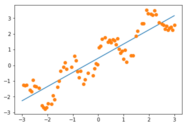
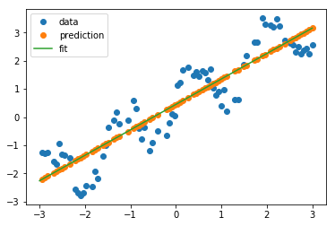
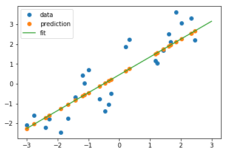
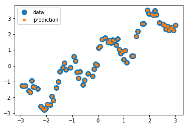
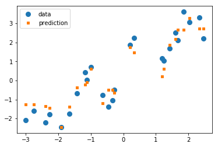

scikit-笔记05:监督学习之分类问题2
Table of Contents
%matplotlib inline import matplotlib.pyplot as plt import numpy as np
1 Supervised Learning Part 2 – Regression Analysis
In regression we are trying to predict a continuous output variable – in contrast to the nominal variables we were predicting in the previous classification examples.
1.0.1 create dataset from a sine curve
Let's start with a simple toy example with one feature dimension (explanatory variable) and one target variable. We will create a dataset out of a sine curve with some noise:
x = np.linspace(-3, 3, 100) print(x) rng = np.random.RandomState(42) y = np.sin(4 * x) + x + rng.uniform(size=len(x)) plt.plot(x, y, 'o');

1.1 underfitting: Linear Regression is too simple
The first model that we will introduce is the so-called simple linear regression. Here, we want to fit a line to the data, which
One of the simplest models again is a linear one, that simply tries to predict the data as lying on a line. One way to find such a line is LinearRegression (also known as Ordinary Least Squares (OLS) regression). The interface for LinearRegression is exactly the same as for the classifiers before, only that y now contains float values, instead of classes.
As we remember, the scikit-learn API requires us to provide the target variable (y) as a 1-dimensional array; scikit-learn's API expects the samples (X) in form a 2-dimensional array – even though it may only consist of 1 feature. Thus, let us convert the 1-dimensional x NumPy array into an X array with 2 axes:
print('Before: ', x.shape) X = x[:, np.newaxis] #<- from (100,) to (100,1) print('After: ', X.shape) print(X)
1.1.1 splitting dataset to training and testing
Again, we start by splitting our dataset into a training (75%) and a test set (25%):
from sklearn.model_selection import train_test_split X_train, X_test, y_train, y_test = train_test_split(X, y, test_size=0.25, random_state=42)
1.1.2 create ML model by estimator.fit(X_train,y_train)
Next, we use the learning algorithm implemented in LinearRegression to fit a regression model to the training data:
from sklearn.linear_model import LinearRegression regressor = LinearRegression() regressor.fit(X_train, y_train)
LinearRegression(copy_X=True, fit_intercept=True, n_jobs=1, normalize=False)
After fitting to the training data, we paramerterized a linear regression model with the following values.
1.1.3 get the coef and intercept of fitting line
Note that, you can do this ONLY after execute regressor.fit() method.
print('Weight coefficients: ', regressor.coef_) print('y-axis intercept: ', regressor.intercept_)
Since our regression model is a linear one, the relationship between the target variable (y) and the feature variable (x) is defined as
\(y = weight \times x + \text{intercept}\).
1.1.4 plot the fitting line
Plugging in the min and max values into thos equation, we can plot the regression fit to our training data:
min_pt = X.min() * regressor.coef_[0] + regressor.intercept_ max_pt = X.max() * regressor.coef_[0] + regressor.intercept_ plt.plot([X.min(), X.max()], [min_pt, max_pt]) plt.plot(X_train, y_train, 'o');

1.1.5 plot the predict data points of training and testing
Similar to the estimators for classification in the previous notebook, we use the predict method to predict the target variable. And we expect these predicted values to fall onto the line that we plotted previously:
#<- get the predict labels # It's obviously that the predict value is on the line. y_pred_train = regressor.predict(X_train) plt.plot(X_train, y_train, 'o', label="data") plt.plot(X_train, y_pred_train, 'o', label="prediction") plt.plot([X.min(), X.max()], [min_pt, max_pt], label='fit') plt.legend(loc='best')
<matplotlib.legend.Legend at 0x7f9c4a74dbe0>

As we can see in the plot above, the line is able to capture the general slope of the data, but not many details.
Next, let's try the test set:
y_pred_test = regressor.predict(X_test) plt.plot(X_test, y_test, 'o', label="data") plt.plot(X_test, y_pred_test, 'o', label="prediction") plt.plot([X.min(), X.max()], [min_pt, max_pt], label='fit') plt.legend(loc='best');

1.1.6 evaluate the MSE-score of prediction
Again, scikit-learn provides an easy way to evaluate the prediction
quantitatively using the score method. For regression tasks, this is the R2
score. Another popular way would be the Mean Squared Error (MSE). As its name
implies, the MSE is simply the average squared difference over the predicted and
actual target values
\(MSE = \frac{1}{n} \sum_{i=1}^{n} (\text{predicted}_i - \text{true}_i)^2\)
regressor.score(X_test, y_test)
0.79943214050796851
EXERCISE: Add a feature containing sin(4x) to X and redo the fit. Visualize the predictions with this new richer, yet linear, model.
1.2 change to a more complex model: KNeighborsRegression
As for classification, we can also use a neighbor based method for regression.
We can simply take the output of the nearest point, or we could average several
nearest points. This method is less popular for regression than for
classification, but still a good baseline.
1.2.1 get the ML model
from sklearn.neighbors import KNeighborsRegressor kneighbor_regression = KNeighborsRegressor(n_neighbors=1) kneighbor_regression.fit(X_train, y_train)
KNeighborsRegressor(algorithm='auto', leaf_size=30, metric='minkowski', metric_params=None, n_jobs=1, n_neighbors=1, p=2, weights='uniform')
1.2.2 perfectly correct prediction for training dataset
Again, let us look at the behavior on training and test set:
y_pred_train = kneighbor_regression.predict(X_train) plt.plot(X_train, y_train, 'o', label="data", markersize=10) plt.plot(X_train, y_pred_train, 's', label="prediction", markersize=4) plt.legend(loc='best');

1.2.3 the score of prediction on testing dataset
On the training set, we do a perfect job: each point is its own nearest neighbor!
y_pred_test = kneighbor_regression.predict(X_test) plt.plot(X_test, y_test, 'o', label="data", markersize=8) plt.plot(X_test, y_pred_test, 's', label="prediction", markersize=4) plt.legend(loc='best');

On the test set, we also do a better job of capturing the variation, but our estimates look much messier than before. Let us look at the R2 score:
kneighbor_regression.score(X_test, y_test)
0.91662930224679484
UNDERFITTING: Much better than before! Here, the linear model(linear regression) was not a good fit for our problem; it was lacking in complexity and thus under-fit our data.
2 EXERCISE
EXERCISE: Compare the KNeighborsRegressor and LinearRegression on the boston
housing dataset. You can load the dataset using sklearn.datasets.load_boston.
You can learn about the dataset by reading the DESCR attribute.
3 Misc tools
3.1 scikit-learn
3.1.1 ML models by now
- from sklearn.datasets import make_blobs
- from sklearn.datasets import load_iris
- from sklearn.model_selection import train_test_split
- from sklearn.linear_model import LogisticRegression
- from sklearn.linear_model import LinearRegression
- from sklearn.neighbors import KNeighborsClassifier
- from sklearn.neighbors import KNeighborsRegressor